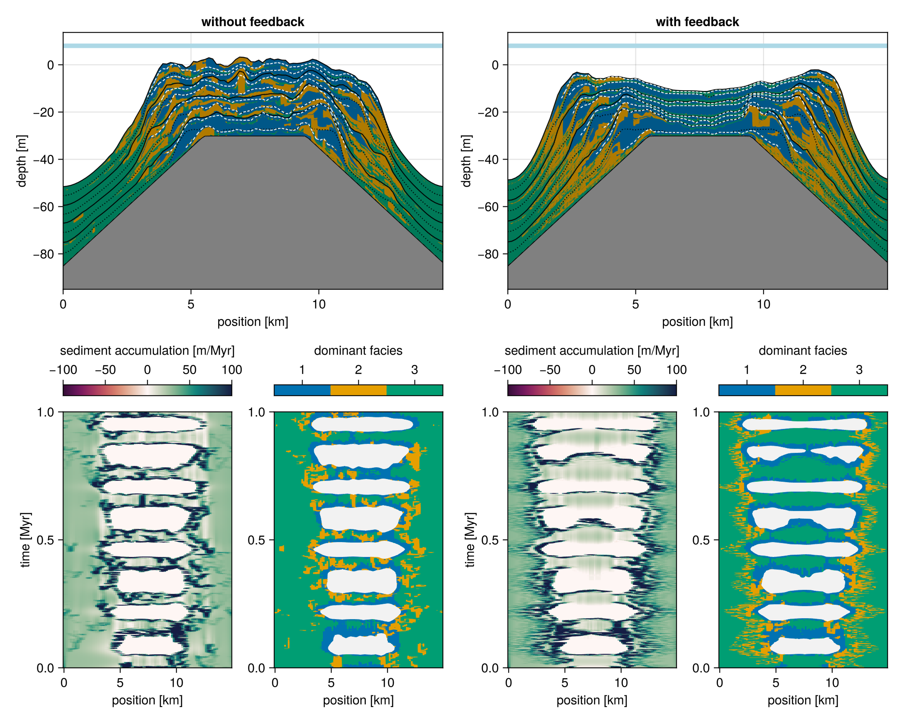

Cellular Automata
Following CarboCAT by [2], we use a cellular automaton to obtain complex, time-variable spatial distribution patterns of sediment producers while maintaining low computational effort and generality, i.e. not attempting to simulate specific organism groups.
In the cellular automaton, we refer to the units interacting with each other as species. These species can be a biological species or an assemblage (guild) of carbonate producers. Here it is important that they are the progenitor of some (limestone) facies type. Therefore, we map: one species $->$ one facies. In the original 2013 model, this stage is implemented with a celullar automaton (or CA).
We have reimplemented the CA used in [2], which uses three species and assesses interactions on a 5 $\times$ 5 neighborhood grid. For each facies, we assess two ranges: the activation range (here set to 6 ≤ n ≤ 10 ) and the viability range (here 4 ≤ n ≤ 10 ). If the number of live neighbours is in the viability range, the cell stays alive. If the cell is dead, but the number of live neighbours is in the activation range, the cell becomes alive. The ranges can be set for each facies separately, but the results of using different rules for each facies have not been explored. The 5 $\times$ 5 is currently not a parameter, but a hard-coded feature, but it can be modified should a use case arise.
We depend on the box properties being defined. Each Facies should have a viability_range and activation_range defined. The active property determines whether a facies is active in the cellular automaton. Two other parameters are the ca_interval setting how many time steps between every CA advancement, and the ca_random_seed setting the random seed for generating the initial noise.
@kwdef struct Facies <: AbstractFacies
viability_range::Tuple{Int,Int} = (4, 10)
activation_range::Tuple{Int,Int} = (6, 10)
active::Bool = true
end
@kwdef struct Input <: AbstractInput
ca_interval::Int = 1
ca_random_seed::Int = 0
endThe state of the CA is stored in ca and ca_priority.
@kwdef mutable struct State <: AbstractState
ca::Matrix{Int}
ca_priority::Vector{Int}
endThe rules function computes the next value of a cell, given the configured vector of facies, the current facies priority order, and a neighbourhood around the cell.
function rules(facies, ca_priority, neighbourhood)
cell_facies = neighbourhood[3, 3]
neighbour_count(f) = sum(neighbourhood .== f)
if cell_facies == 0
for f in ca_priority
n = neighbour_count(f)
(a, b) = facies[f].activation_range
if a <= n && n <= b
return f
end
end
0
else
n = neighbour_count(cell_facies) - 1
(a, b) = facies[cell_facies].viability_range
(a <= n && n <= b ? cell_facies : 0)
end
endThe initial CA grid is randomized. A dead cell may qualify to become alive for different carbonate factories at the same time. [2] discussed cycling the order of preference for occupying an empty cell at each iteration. We resolve this priority collision by rotating the priority of each facies for occupying a dead cell in every iteration using a deterministic cyclic shift, which ensures that there is no priority given to any facies. This means that the rules change slightly every iteration. We need this extra function so that we know the boundary type BT at compile time.
"""
step_ca(box, facies)
Creates a propagator for the state, updating the celullar automaton in place.
Contract: the `state` should have `ca::Matrix{Int}` and `ca_priority::Vector{Int}`
members.
"""
function step_ca(box::Box{BT}, facies) where {BT<:Boundary{2}}
tmp = Matrix{Int}(undef, box.grid_size)
facies_ = facies
function (state)
p = state.ca_priority
stencil!(BT, Size(5, 5), tmp, state.ca) do nb
rules(facies_, p, nb)
end
state.ca, tmp = tmp, state.ca
state.ca_priority = circshift(state.ca_priority, 1)
return state
end
endInfinite heterogeneity in space and time
A prerequisite for our CA rule was that it shows no convergence on stable patterns. The set of rules used here seems to ensure this, as verified using the script below.
#| creates: ["docs/src/_fig/ca-long-term.svg"]
#| collect: figures
module Script
using CarboKitten
using CarboKitten.Components: CellularAutomaton as CA
using CairoMakie
function main()
input = CA.Input(
box = CarboKitten.Box{Periodic{2}}(
grid_size=(50, 50), phys_scale=1.0u"m"),
facies = fill(CA.Facies(), 3)
)
state = CA.initial_state(input)
step! = CA.step!(input)
for _ in 1:1000
step!(state)
end
fig = Figure(size=(1000, 500))
axes_indices = Iterators.flatten(eachrow(CartesianIndices((2, 4))))
xaxis, yaxis = box_axes(input.box)
i = 1000
for row in 1:2
for col in 1:4
ax = Axis(fig[row, col], aspect=AxisAspect(1), title="step $(i)")
if row == 2
ax.xlabel = "x [m]"
end
if col == 1
ax.ylabel = "y [m]"
end
heatmap!(ax, xaxis/u"m", yaxis/u"m", state.ca)
step!(state)
i += 1
end
for _ in 1:996
step!(state)
i += 1
end
end
save("docs/src/_fig/ca-long-term.svg", fig)
end
end
Script.main()
CA rules
Users are welcome to explore the permanence of spatial patterns for other sets of rules using the interactive explorer. A non-systematic exploration indicates that most deviations from the rules used by [2] lead to quick stabilization of spatial distribution and thus constant patterns. The neighborhood size and the rules represent a case of Larger than Life family of two-dimensional cellula automata [4], but none of the well known rules.
Production feedback
It can be interesting to model feedback on the CA state due to environmental factors. For example, we can kill off facies if it turns out they're not able to produce.
@compose module CAFeedback
using ..Common
@kwdef struct Facies
minimum_production::Union{typeof(0.0u"m/Myr"),Nothing} = nothing
end
function ca_feedback(input::AbstractInput)
production_limit = [f.minimum_production for f in input.facies]
dt = input.time.Δt
function (ca, production)
for i in eachindex(IndexCartesian(), ca)
f = ca[i]
if f != 0 && production_limit[f] !== nothing &&
production[f, i[1], i[2]] / dt < production_limit[f]
ca[i] = 0
end
end
end
end
endTest run

#| creates:
#| - data/output/ca-wo-feedback.h5
#| - data/output/ca-feedback.h5
module Script
using CarboKitten
using CarboKitten.Production
using CarboKitten.Models: ALCAP as M
initial_topography(x, y) =
min(0.0u"m", - sqrt((x - 7.5u"km")^2 + (y - 7.5u"km")^2) / 100.0 + 20.0u"m")
function main()
res = 100
steps = 5000
phys_scale = 15.0u"km" / res
output = Dict(
:topography => OutputSpec(write_interval = max(1, div(steps, 50))),
:profile => OutputSpec(slice = (:, div(res, 2)+1)))
facies(feedback) = [
M.Facies(
name="euphotic",
activation_range=(4, 10),
viability_range=(1, 10),
production=Production.EXAMPLE[:euphotic],
transport_coefficient=10.0u"m/yr",
minimum_production=feedback ? 0.01u"m/Myr" : nothing),
M.Facies(
name="oligophotic",
production=BenthicProduction(
maximum_growth_rate=200.0u"m/Myr",
extinction_coefficient=0.1u"m^-1",
saturation_intensity=60u"W/m^2"
),
transport_coefficient=5.0u"m/yr",
minimum_production=feedback ? 5.0u"m/Myr" : nothing),
M.Facies(
name="pelagic",
active=false,
production=PelagicProduction(
maximum_growth_rate=1.0u"1/Myr",
extinction_coefficient=0.1u"m^-1",
saturation_intensity=60u"W/m^2"
),
transport_coefficient=20.0u"m/yr",
# minimum_production=10.0u"m/Myr"
)
]
box = CarboKitten.Box{Periodic{2}}(grid_size=(res, res), phys_scale=phys_scale)
time_param = TimeProperties(Δt=1.0u"Myr"/steps, steps=steps)
sea_level(t) =
10.0u"m" * sin(2π * t / 123456.0u"yr") +
5.0u"m" * sin(2π * t / 80456.0u"yr")
input(feedback) = M.Input(
time = time_param,
box = box,
facies = facies(feedback),
output = output,
sea_level = sea_level,
initial_topography = initial_topography,
ca_interval = 10,
insolation = 400.0u"W/m^2",
subsidence_rate = 30.0u"m/Myr",
disintegration_rate = 20.0u"m/Myr",
lithification_time = 100.0u"yr",
sediment_buffer_size=50,
depositional_resolution=0.5u"m",
# diagnostics=true
)
run_model(Model{M}, input(false), "data/output/ca-wo-feedback.h5")
run_model(Model{M}, input(true), "data/output/ca-feedback.h5")
end
end
Script.main()#| requires:
#| - data/output/ca-wo-feedback.h5
#| - data/output/ca-feedback.h5
#| creates:
#| - docs/src/_fig/ca-feedback.png
module PlotFeedback
using GLMakie
using CarboKitten.Visualization
using CarboKitten.Export: read_volume, read_slice
function main()
GLMakie.activate!()
fig = Figure(size=(1000, 800))
header, topography = read_volume("data/output/ca-wo-feedback.h5", :topography)
_, profile = read_slice("data/output/ca-wo-feedback.h5", :profile)
ax1 = Axis(fig[1, 1:2])
sediment_profile!(ax1, header, profile)
ax1.title = "without feedback"
ax1_wh1 = Axis(fig[3, 1])
ax1_wh2 = Axis(fig[3, 2])
sa, ft = wheeler_diagram!(ax1_wh1, ax1_wh2, header, profile)
Colorbar(fig[2, 1], sa; vertical=false, label="sediment accumulation [m/Myr]")
Colorbar(fig[2, 2], ft; vertical=false, ticks=1:3, label="dominant facies")
header, topography = read_volume("data/output/ca-feedback.h5", :topography)
_, profile = read_slice("data/output/ca-feedback.h5", :profile)
ax2 = Axis(fig[1, 3:4])
sediment_profile!(ax2, header, profile)
ax2.title = "with feedback"
ax2_wh1 = Axis(fig[3, 3])
ax2_wh2 = Axis(fig[3, 4])
sa, ft = wheeler_diagram!(ax2_wh1, ax2_wh2, header, profile)
Colorbar(fig[2, 3], sa; vertical=false, label="sediment accumulation [m/Myr]")
Colorbar(fig[2, 4], ft; vertical=false, ticks=1:3, label="dominant facies")
save("docs/src/_fig/ca-feedback.png", fig)
end
end
PlotFeedback.main()Tests
module CellularAutomatonSpec
using Test
using CarboKitten.Components.Common
using CarboKitten.Components: CellularAutomaton as CA
@testset "Components/CellularAutomaton" begin
let facies = fill(CA.Facies(
viability_range=(4, 10),
activation_range=(6, 10),
active=true), 3),
input1 = CA.Input(
box=Box{Periodic{2}}(grid_size=(50, 50), phys_scale=1.0u"m"),
facies=facies),
input2 = CA.Input(
box=Box{Periodic{2}}(grid_size=(50, 50), phys_scale=1.0u"m"),
facies=facies,
ca_random_seed=1)
state1 = CA.initial_state(input1)
state2 = CA.initial_state(input2)
state3 = CA.initial_state(input2)
@test CA.initial_state(input1).ca == CA.initial_state(input1).ca
@test state1.ca != state2.ca
step! = CA.step!(input1) # inputs have same rules
for i in 1:20
step!(state1)
step!(state2)
step!(state3)
end
@test state1.ca != state2.ca
@test state2.ca == state3.ca
end
@testset "inactive facies" begin
let facies = [CA.Facies(active=true),
CA.Facies(active=false),
CA.Facies(active=true),
CA.Facies(active=false)],
input = CA.Input(
box=Box{Periodic{2}}(grid_size=(10, 10), phys_scale=1.0u"m"),
facies=facies)
state = CA.initial_state(input)
@test state.ca_priority == [1,3]
# inactive facies shouldn't appear in the ca
@test all(state.ca .!= 2)
@test all(state.ca .!= 4)
end
end
end
endComponent
@compose module CellularAutomaton
@mixin Boxes, FaciesBase
using ..Common
using ...Stencil: stencil!
using Random
<<ca-input>>
<<ca-state>>
<<ca-step>>
@constructor function _initial_state(input)::State[ca, ca_priority]
n_facies = length(input.facies)
active_facies = 1:n_facies |> filter(f->input.facies[f].active==true)
ca = rand(MersenneTwister(input.ca_random_seed), [0; active_facies], input.box.grid_size...)
return (ca = ca, ca_priority = active_facies |> collect)
end
function initial_state(input::AbstractInput)
n_facies = length(input.facies)
active_facies = 1:n_facies |> filter(f->input.facies[f].active==true)
ca = rand(MersenneTwister(input.ca_random_seed), [0; active_facies], input.box.grid_size...)
return State(ca, active_facies |> collect)
end
function step!(input::AbstractInput)
return step_ca(input.box, input.facies)
end
end